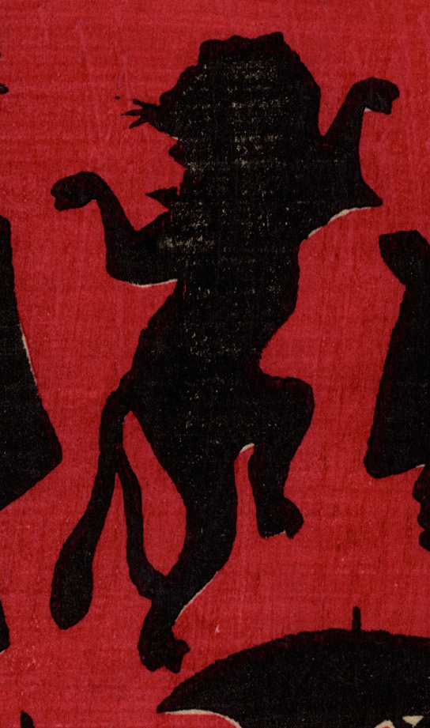

猫又の影。手ぬぐいをかぶった猫が立ち上がり踊っている。尾は二股に分かれている。
著作者：小林英次郎／出典：親書誌：U426_nichibunken_0269：しん板あんどううつしゑ；シンパン アンドウ ウツシエ／日付：2014／資源識別子：U426_nichibunken_0269_0001_0000
Copyright (c)2010- International Research Center for Japanese Studies, Kyoto, Japan. All rights reserved.